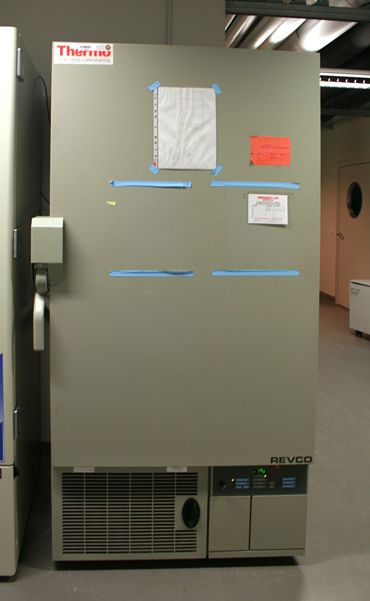

catalogo de equipo de laboratorio
Campana de extracción de solventes
generalmente es rectangular como un gabinete o caja con una abertura frontal que puede abrirse o cerrarse, el interior esta hecho de materiales resistentes a productos quimicos y tiene una superficie de trabajo en su interior
en la parte superior de a campana tiene un sistema de ventilacion que incluye un extractor o ventilador que aspira los vapores del interior de la caja hacia arriba y luego hacia fuera de la campana a travez de un sistema de ventiacion con un sistema filtracion o se expulsan al exterior del edificio
tiene controles para regular el flujo de aire e iluminacion para la mesa de trabajo
breve
extrae vapores usando un extractor junto a un sistema de filtracion o los expulsa al exterior, tiene forma de caja con una apertura y una mesa trabajo en el interior
es una caja con una apertura y una mesa de trabajo en su interior extrae vapores usando un extractor junto a sistema de filtracion
{kind=link}
{kind=link}
refrigerador
Un refrigerador de laboratorio es un equipo que se utiliza para mantener productos químicos y muestras a temperaturas controladas en un entorno de laboratorio. Se asemeja a un refrigerador doméstico, pero está diseñado para condiciones de laboratorio y puede ajustarse a rangos de temperatura específicos. Esto ayuda a preservar la integridad de los materiales almacenados.
breve
mantiene productos quimicos y muestras a temperaturas controladas ayuda a preserva la integridad de los materiales
{kind=link}
congelador
Un congelador de laboratorio es un equipo diseñado para mantener muestras y productos químicos a temperaturas muy bajas, generalmente entre -20°C y -80°C, garantizando su almacenamiento seguro y a largo plazo en entornos de investigación y laboratorios.
breve
mantiene muestras y productos quimicos a temperaturas bajas, entre -20°C y -80°C
{kind=link}
{kind=link}
ultracongelador
Un ultracongelador es un dispositivo de laboratorio que puede alcanzar temperaturas extremadamente bajas, típicamente alrededor de -80°C o más frías, para el almacenamiento a largo plazo de muestras biológicas y materiales sensibles a la temperatura.
breve
mantiene muestras y productos quimicos a temperaturas extremadamente bajas alrededor de -80°C o mas frias para el almacenamiento a largo plazo
{kind=link}